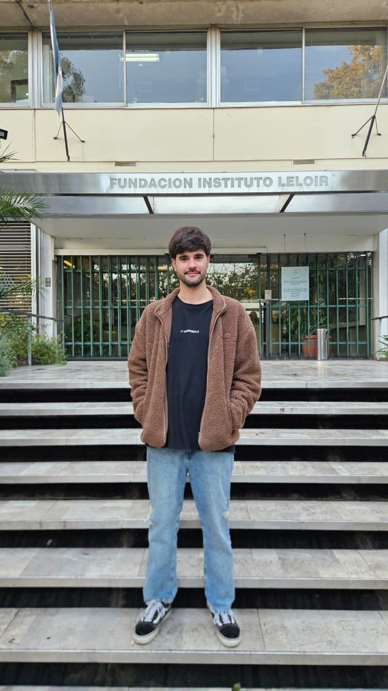
Tomás Peters
Presidente y co-fundador de la AJI. Licenciado en Biotecnología y Biología Molecular (UNLP), becario doctoral CONICET, docente en la UNLP y estudiante de doctorado en el Laboratorio de Biología Celular del ARN (FIL - UBA).
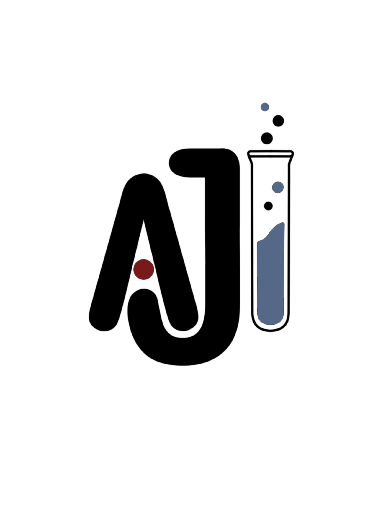
Ciencia joven, colaborativa y federal.
10–11
diciembre 2026
Sede Universidad Nacional de San Martín (UNSAM)
Un congreso organizado por y para jóvenes investigadores: un espacio de encuentro, intercambio y colaboración para estudiantes avanzados, doctorandos, posdoctorandos e investigadores en etapas iniciales de su carrera.
Podés solicitar beca de inscripción o de movilidad.
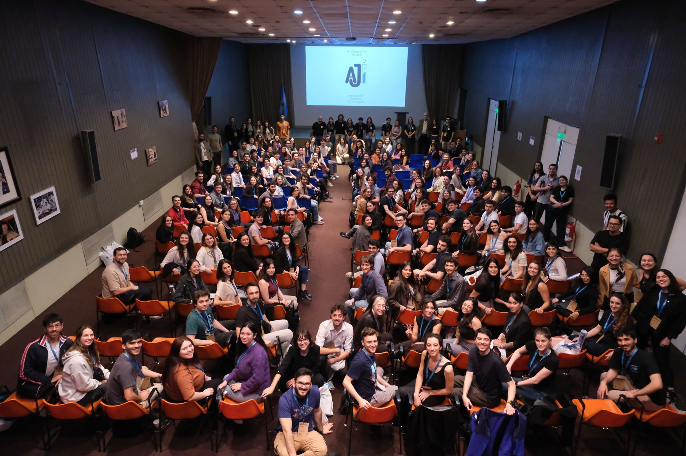
Jóvenes científicos con trayectorias destacadas y comunicadores de la ciencia.
Para compartir y discutir nuestros trabajos.
Un espacio dedicado a startups y vinculación tecnológica.
Los almuerzos de ambas jornadas están cubiertos. Se entregan certificados de participación.
OneLabMerckMicroLat
y otras empresas que hacen posible el congreso.
La Agrupación de Jóvenes Investigadores (AJI) es una organización sin fines de lucro que busca generar un espacio de charla, reflexión y discusión para estudiantes de doctorado, postdoctorado e investigadores jóvenes en Argentina, con un formato de reuniones anuales.
Nuestra misión se basa en una iniciativa inédita que busca consolidar un espacio propio, horizontal y federal para investigadores/as en etapas de formación: becarios/as doctorales, posdoctorales, investigadores/as jóvenes y estudiantes avanzados/as de grado de todo el país.
Comité fundador, organizador y científico:

Presidente y co-fundador de la AJI. Licenciado en Biotecnología y Biología Molecular (UNLP), becario doctoral CONICET, docente en la UNLP y estudiante de doctorado en el Laboratorio de Biología Celular del ARN (FIL - UBA).
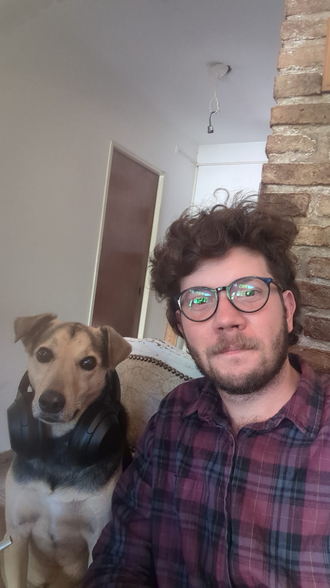
Vicepresidente y co-fundador de la AJI. Licenciado en Biotecnología y Biología Molecular (UNLP), becario doctoral CONICET, docente en la UNLP y estudiante de doctorado en Structural Bioinformatics Group (UNQ).(No el perro).
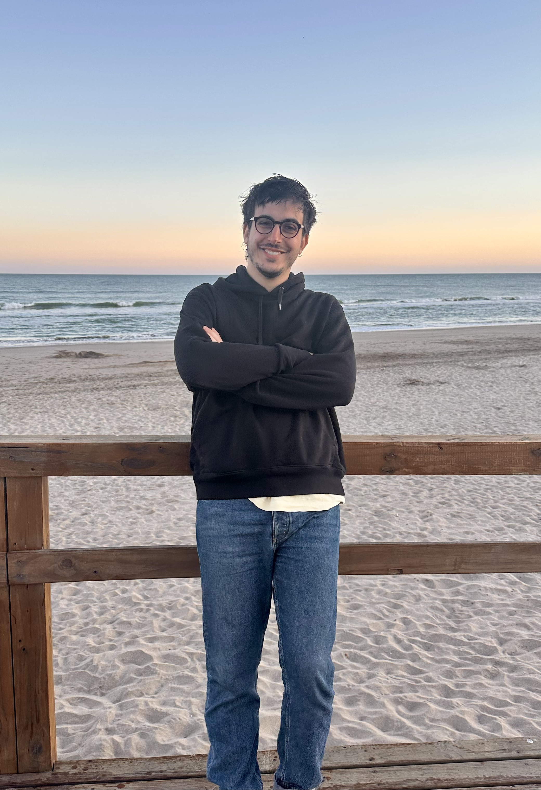
Miembro del comité científico. Licenciado en Biología (FCEN UBA) y actualmente becario doctoral en el Laboratorio de Biología Celular del ARN (FCEN UBA).
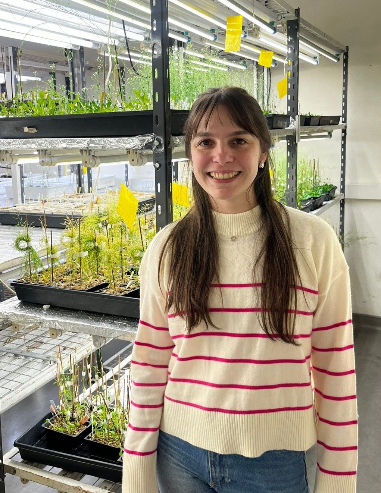
Miembro del comité científico. Licenciada en Biotecnología (UNL), becaria doctoral CONICET y desarrolla su tesis en el Laboratorio de Biología Molecular de Plantas (FIL/IIBBA-CONICET).
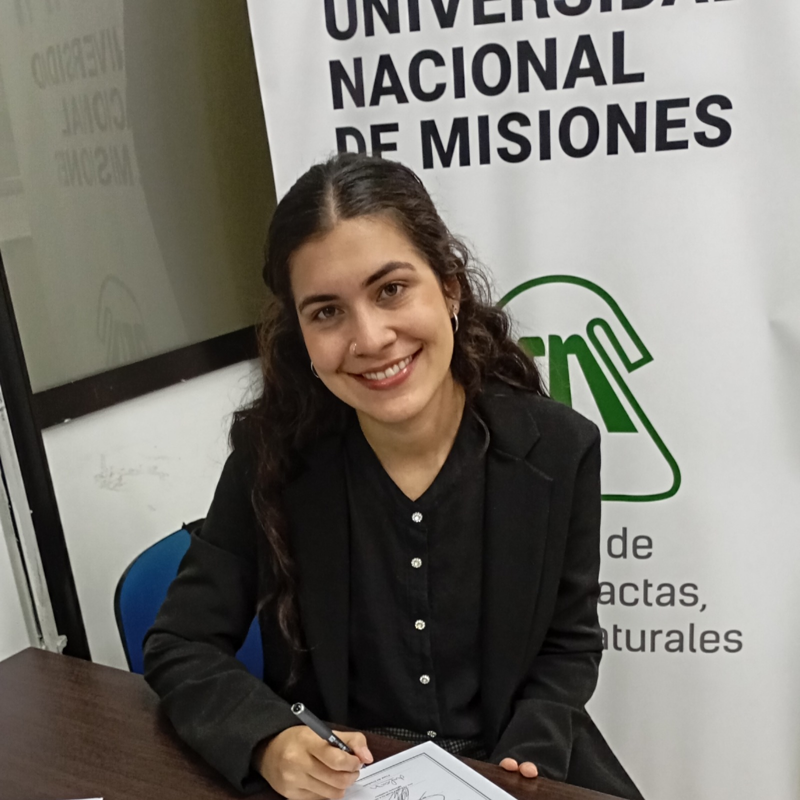
Miembro del comité organizador. Licenciada en Genética (UNaM) y becaria doctoral CONICET en el Laboratorio de Estructura, Función y Plasticidad de Proteínas (IIB-UNSAM).
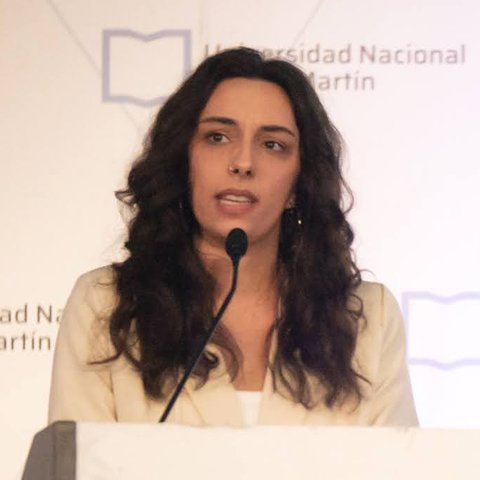
Miembro del comité organizador. Licenciada en Biotecnología y docente en UNSAM, becaria doctoral CONICET en el Laboratorio de Estructura, Función y Plasticidad de Proteínas (IIB-UNSAM).
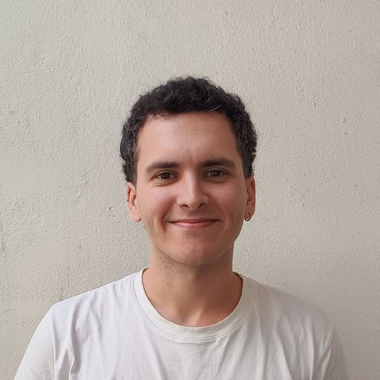
Licenciado en Ciencias Biológicas (FCEN-UBA), becario doctoral CONICET y estudiante de doctorado en el Laboratorio de Genética y Fisiología Molecular (FIL/FCEN-UBA).
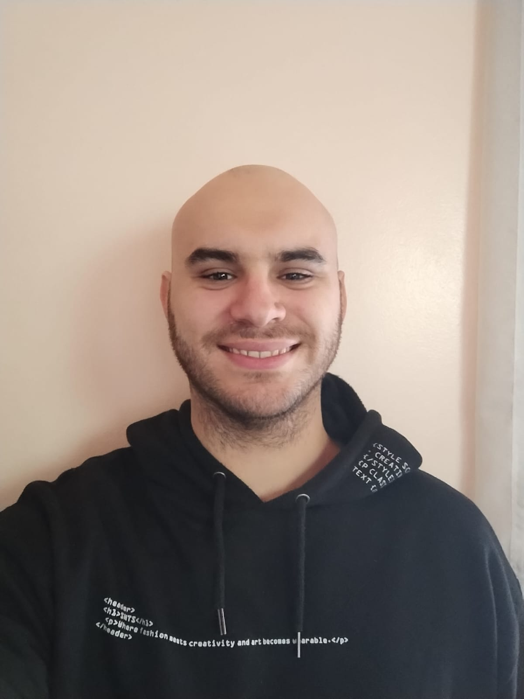
Miembro del comité científico. Licenciado en Biotecnología y Biología Molecular (UNLP), becario Agencia en el Laboratorio de Estudio de Secreción (FCEN UBA) y docente de la UNLP.
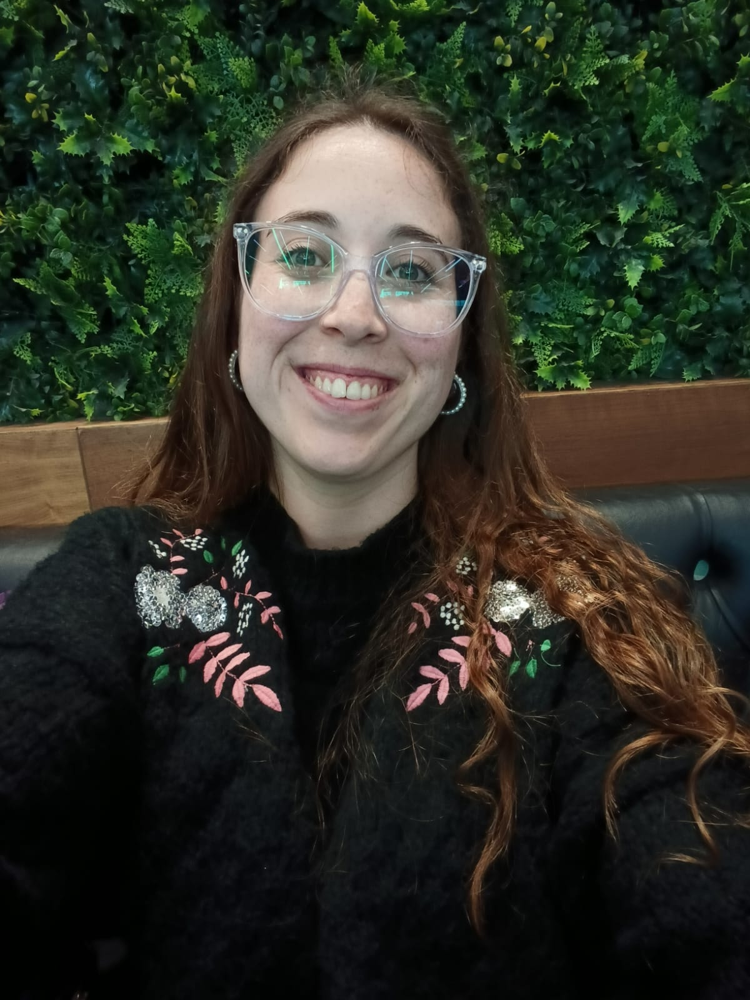
Miembro del comité organizador. Licenciada en Genética (UNNOBA), becaria doctoral de CONICET y lleva a cabo su tesis doctoral en el Laboratorio de Genética y Genómica Funcional del CENEXA (FCM-UNLP-CONICET).
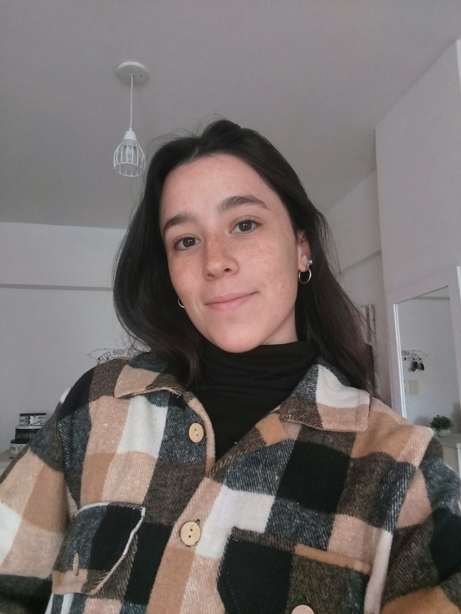
Miembro del comité organizador. Licencia en Genética (UNaM), becaria doctoral CONICET en el Laboratorio de Terapéutica Experimental en Procesos Neurodegenerativos (INGEBI - CONICET)
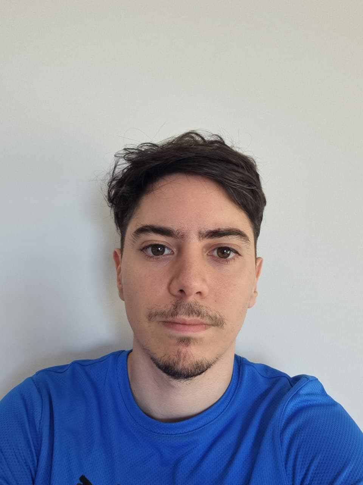
Licenciado en Biología (FCEN UBA), becario doctoral CONICET, docente en la FCEN-UBA y estudiante de doctorado en el laboratorio de Diferenciación Celular y Cáncer (IQUIBICEN-CONICET).
La AJI se respalda en un código de conducta con especial énfasis en el respeto y el respaldo mutuo.
Disponible aquí